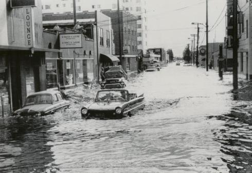

President Lyndon B. Johnson using his Amphicar to fool his cabinet members
into thinking they were crashing into a lake
The Amphicar did not sell as well as expected however, because of its interesting concept it was featured in many films.
To name a few, Amphicar appears in the films Rotten to the Core (1965), The Sandwich Man (1966), The President's Analyst (1967) and many more.

Amphicar owner cruises down a street after the Great Flood of 1967 in Fairbanks, Alaska
To put the Amphicar's capabilities to the test, in 1965 two were sent to cross the Yukon River in Alaska and the English Channel and successfully made it across.